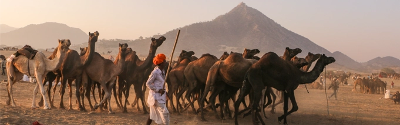
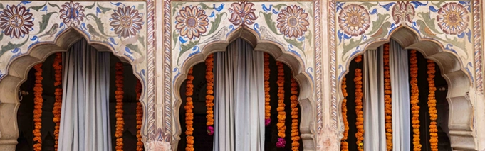

Pushkar Fair Dates 2026
Pushkar Fair runs from November 17 to November 24, 2026, and offers its guests a curated experience of the more traditional aspects of Pushkar Fair, one of Rajasthan’s most spectacular events. The Pushkar Fair official programme events and fairground will run from November 21 to November 24, 2026.
17 November
10:00 AM- Pooja, Flag Hoisting, Nagada Vadan at Mela Ground
10:30 AM-Mandana Competition & Group Dance by School
Girls at Mela Ground.
11:00 AM “Chak De Rajasthan” Football Match (Local v/s
Foreigners) at Mela Ground
6:00 PM Deepdaan, Rangoli, Maha Aarti Pushkar Abhishek at
Pushkar Sarovar Ghats
6:30 PM Voice of Pushkar at Mela Ground Stage
7:00 PM Cultural Performances by Rajasthani Folk Artists
18 November
10:00 AM to 11:30 Langri Taang, Satolia Match& Gilli Danda
(Local v/s Foreigners) at Mela Ground
11:30 AM Camel Decoration Competition at Mela Ground
12:00 Noon Camel Dance Competition at Mela Ground
6:30 PM Voice of Pushkar at Mela Ground Stage
7:00 PM Cultural Performances at Mela Ground Stage
19 November
10:00 Kabaddi Match (Local v/s Foreigners) at Mela Ground
11:30 Horse Dance Competition
1:00 PM Inter Panchayat Samiti Rural sports (Rassa Kassi,
Volleyball, Kabaddi)
7:00 PM Cultural Performances at Mela Ground Stage
20 November
9:00 AM Spiritual Walk/Procession Gurudwara to Mela Ground
1:00 PM Inter Panchayat Samiti Rural Sports at Mela Ground
4:00 PM Inauguration of Food and Craft Festival, Shilpgram
6:00 PM Maha Aarti
7:00 PM Cultural Performances at Mela Ground Stage
21 November
10:30 AM Turban Tying & Tilak Competition for Foreigners at
Mela Ground.
11:00 and 10:00 PM Food and Craft Festival, Shilpgram
11:00 AM Moustache Competition
12:00 PM Inter Panchayat Samiti Rural Sports-Final
6:00 PM Maha Aarti at Pushkar Sarovar Ghats
7:00 PM Cultural Performances at Mela Ground Stage
22 November
10:30 AM Matka Race (For Women)
11:00 AM and 10:00 PM Food and Craft Festival, Shilpgram
11:30 AM Musical Chair Competition (For Women)
6:00 PM Maha Arti at Pushkar Sarovar Ghats
7:00 PM Cultural Performances at Mela Ground Stage
23 November
11:00 AM and 10:00 PM Food and Craft Festival at Shilpgram
11:00 AM“Lagaan” Style Cricket Match at Mela Ground
6:00 PMMaha Arti at Pushkar Sarovar Ghats
7:00 PM Cultural Performances at Mela Ground Stage
24 November
10:30 AM Closing ceremony, Mega Culture Event & Prize
Distribution (Group dance/ kala Jatha Yatra / Matka Race /Tug of
War etc.) at Mela Ground
6:00 PM Maha Arti at Pushkar Sarovar Ghat
Travel With Us
We offer some of the most interesting and engaging itineraries you can find - established for twenty years, with a track record of quality operations, our small and unusual company, Indian Moments, is run by travellers and aims to help you find the best travel experiences in Rajasthan and throughout India.
We're passionate about what we do, and about making your holiday special, and around 85% of our business is from repeat bookings and recommendations.

November 2027
Tailor made tour with Pushkar Fair
Our great value November private tours can take in Pushkar Fair and Varanasi Dev-Diwali Celebrations. You can include the classical sights of the Golden Triangle and real taste of rural Rajasthan, or any other destination of India See More >

October/November 2027
Haveli Diwali and Pushkar Fair
Discover less-travelled routes on our special Haveli Diwali and Pushkar Fair tour which includes Amritsar’s Golden Temple, Patiala and Jodhpur - a great introduction to India if you like to get away from the crowds, and ideal choice for solo travellers See More >